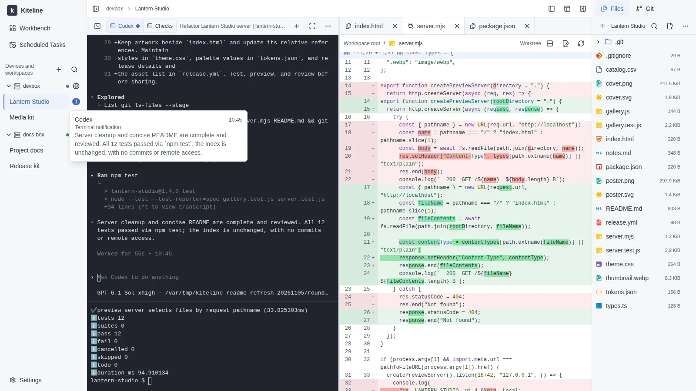
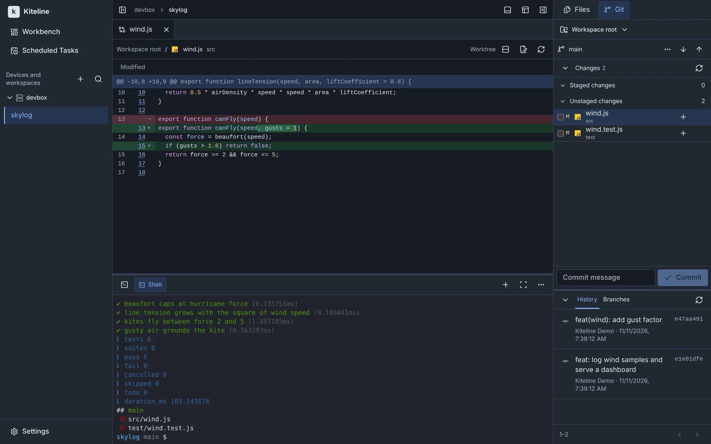

放飞 agent，线还在你手里。
自托管的 coding agent 工作台。Claude Code、Codex 以原生 TUI 跑在你自己的设备上，浏览器、手机和命令行接续同一个会话。

不套壳，不重画。就是它原本的终端。
agent 运行在真实终端里，保留原有的界面与交互，沿用设备上已有的工具链与环境。
电脑、手机、命令行。同一个会话，一直在跑。
接入 Linux、Windows 和 macOS 设备，按项目切换工作区。换一台电脑或拿起手机，会话继续运行，各端共享同一份输入与画面。
在本机终端，接住远处的会话。
kiteline terminal attach
接续同一个会话；也可以用短命令发送输入、查看输出、上传下载文件。
终端、文件、Git。一屏看清 agent 改了什么。
终端分组与分屏，编辑文件，预览图片和 Markdown/HTML 草稿，查看 Git 改动。设备上的 Web 服务也能直接在浏览器里打开，支持 WebSocket 与热更新。

它在等你时，你会知道。你睡着时，它照常干活。
各终端发出的通知与等待报告汇总在工作区列表，点一下回到对应终端。定时任务按 cron 计划在设备上运行脚本或 agent，并保留运行记录。
四行命令，部署在你自己的主机上。
一台装了 Docker 的 Linux 主机运行 server；设备上的 agent 主动向外连接，不需要在设备上开放入站端口。
$ mkdir kiteline && cd kiteline $ curl -fsSLO https://github.com/Azure99/kiteline/releases/latest/download/compose.yaml $ docker compose up -d $ docker compose logs server
mkdir kiteline && cd kiteline curl -fsSLO https://github.com/Azure99/kiteline/releases/latest/download/compose.yaml docker compose up -d docker compose logs server